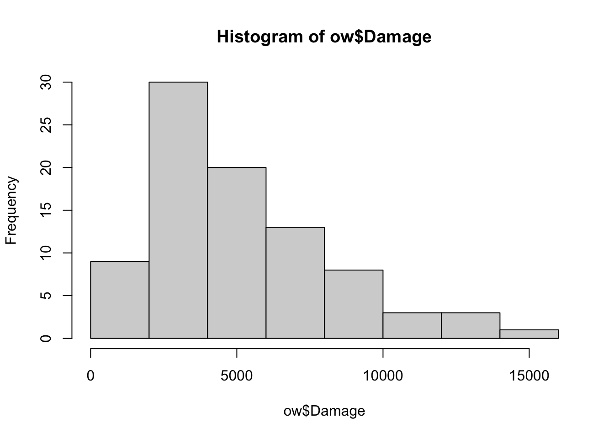
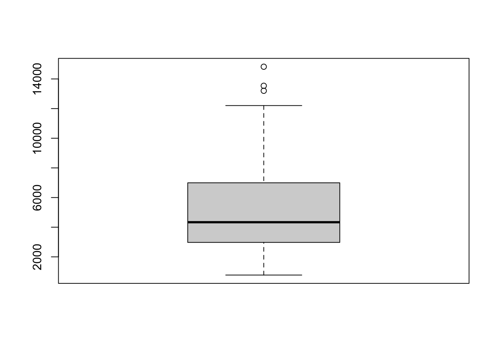

A data.frame in R is a data structure used to store data in a tabular form. It is very similar to a spreadsheet, excel sheet, or SQL table within R. You can also think of it as a collection of multiple data vectors. A data.frame is two-dimensional, meaning it has rows and columns where:
each row represents an observation
each column represents a variable, attribute, or feature.
What is tidyverse?
Tidyverse is a collection of packages to help with cleaning, transformation, visualization, and analysis. (A few packages in Tidyverse include dplyr, ggplot2, tidyr, and readr). In this class, we will be using this collection for data wrangling, cleaning, and transforming.
You can install tidyverse by running: install.packages("tidyverse").
What is ggplot2?
This is the R package for data visualization. This suite provides an easy way to visualize your data with: bar charts, scatter plots, time trends, etc. Writing ggplot code comprises of these components: the data being visualized, the aesthetics (how you would like the variables to be mapped), and geometric objects (the shapes that represent the data).
Note: Installing tidyverse also installs ggplot2, since it’s one of the core packages included.
Creating a Data.frame
You can build a data.frame either by defining it within R or by reading data from a .csv or .xlsx file.
Defining in R
Let’s add our previously defined vectors in a data.frame.
description tax_2021 tax_2022
1 Income 352818 372492
2 Gross Receipts 296806 327115
3 Section 30 Federal income tax 65110 76141
4 Property 35612 35794
5 Hotel Occupancy 12372 18169
6 Liquid Fuel 10100 9353
Reading in a .csv
To read a separate .csv file into R, we will use the read_csv function from the readr package (also part of tidyverse).
hide code
library(tidyverse)
hide code
# personal preference for me is to create a separate string that is my parent folderdir <-"/Users/rdominguez/Documents/MA500/Lessons/datasets/"ow <-read_csv(paste0(dir, "overwatch_stats.csv"))
Rows: 87 Columns: 12
── Column specification ────────────────────────────────────────────────────────
Delimiter: ","
chr (5): Player, Date, Map, Mode, Role
dbl (7): Win, Elimination, Assists, Deaths, Damage, Heals, Mitigation
ℹ Use `spec()` to retrieve the full column specification for this data.
ℹ Specify the column types or set `show_col_types = FALSE` to quiet this message.
Analyzing the data
Once your data is loaded into R, the best first steps is to inspect it. The main focus: get familiar with the data and summarize its main characteristics.
The head() function displays the first 6 rows of your dataset
The summary() function provides us with a statistical summary of each column or variable.
hide code
summary(ow)
Player Date Win Map
Length:87 Length:87 Min. :0.0000 Length:87
Class :character Class :character 1st Qu.:0.0000 Class :character
Mode :character Mode :character Median :1.0000 Mode :character
Mean :0.6552
3rd Qu.:1.0000
Max. :1.0000
Mode Role Elimination Assists
Length:87 Length:87 Min. : 4.00 Min. : 0.000
Class :character Class :character 1st Qu.:10.50 1st Qu.: 2.000
Mode :character Mode :character Median :15.00 Median : 6.000
Mean :16.68 Mean : 8.747
3rd Qu.:21.00 3rd Qu.:12.500
Max. :58.00 Max. :51.000
Deaths Damage Heals Mitigation
Min. : 0.000 Min. : 773 Min. : 0 Min. : 0
1st Qu.: 4.000 1st Qu.: 2974 1st Qu.: 100 1st Qu.: 0
Median : 6.000 Median : 4336 Median : 1322 Median : 0
Mean : 5.989 Mean : 5166 Mean : 3214 Mean :1156
3rd Qu.: 8.000 3rd Qu.: 6994 3rd Qu.: 5898 3rd Qu.:1798
Max. :12.000 Max. :14824 Max. :18620 Max. :7253
The str() function gives a structural overview of the data.
Another useful thing to analyze is looking at all the possible values in your columns - sometimes, the str() function shows all unique values, but other times it gets cut off. We can do it this way:
hide code
# output all unique values in the Player column unique(ow$Player)
[1] "player1" "player2"
hide code
# OR use the apply function for the unique functionlapply(ow, unique)
We can access a column in a data.frame by using the $ operator. When we do this, we can treat the column as if it is a single vector.
If we analyze the output of the summary() and the str() function, we can see that the Date column is categorized as a character. Let’s reassign it’s class by using the as.Date function.
hide code
#' because the values of Date appear as MM/DD/YY in the data, we will use %m/%d/%y to follow the same format.#' %y represents year using 2 digits, %Y represents using 4 digitsow$Date <-as.Date(ow$Date, format ="%m/%d/%y")class(ow$Date)
[1] "Date"
Visualizing the data
The output of summary() and str() told us that we have several numeric columns in our data: eliminations, assists, deaths, damage, heals, and mitigation.
Let’s first visualize a histogram for the damage column to determine its distribution.
hide code
# using base R function: hist()hist(ow$Damage)

We can also create a boxplot as another way to view its distribution and determine what our potential outliers would look like.
hide code
# using base R function: boxplot()boxplot(ow$Damage)

Data Transformation
Convert the data.frame from wide to long
Transformation Functions:
pivot_longer() -> function to go from wide to long
Player Date Win Map
Length:6 Min. :2024-08-15 Min. :0.0000 Length:6
Class :character 1st Qu.:2024-08-15 1st Qu.:0.2500 Class :character
Mode :character Median :2024-08-15 Median :1.0000 Mode :character
Mean :2024-08-15 Mean :0.6667
3rd Qu.:2024-08-15 3rd Qu.:1.0000
Max. :2024-08-15 Max. :1.0000
Mode Role Elimination Assists
Length:6 Length:6 Min. : 7.00 Min. :0.00
Class :character Class :character 1st Qu.: 8.50 1st Qu.:2.25
Mode :character Mode :character Median :13.50 Median :3.00
Mean :16.17 Mean :2.50
3rd Qu.:24.50 3rd Qu.:3.00
Max. :28.00 Max. :4.00
Deaths Damage Heals Mitigation
Min. :4.000 Min. : 2163 Min. : 0.0 Min. : 0.00
1st Qu.:4.250 1st Qu.: 4756 1st Qu.: 36.5 1st Qu.: 61.25
Median :5.500 Median : 6244 Median :1303.0 Median : 536.50
Mean :5.833 Mean : 6281 Mean :1660.2 Mean : 703.83
3rd Qu.:6.750 3rd Qu.: 7032 3rd Qu.:2494.5 3rd Qu.:1008.00
Max. :9.000 Max. :11480 Max. :4849.0 Max. :2082.00
The example above states: with the overwatch dataset, use the function head() and from the output of head(), use the function summary().
Dplyr
dplyr is a package in R that is part of tidyverse, it is the main package for data manipulation that is super intuitive. It is often described as “grammar for data manipulation”
mutate() - adds new variables that are “manipulations” of other variables that already exist in your data / create or transform columns
x x2
1 1 1
2 3 9
3 8 64
4 10 100
5 NA NA
6 5 25
7 6 36
filter() - filters or picks cases based on their values
Tip
The filter() function will always return or filter your data for conditions that are TRUE meaning conditions that are FALSE or conditions that are NA will not be returned.
If you want to retain the missing values, you have to explicitly filter for it as well.
Use is.na() to determine if value is missing.
hide code
df <-data.frame(x=c(1,3,8,10, NA, 5, 6))# NA is dropped as wellfilter <- df %>%filter(x !=3)filter
x
1 1
2 8
3 10
4 5
5 6
hide code
filter <- df %>%filter(x !=3|is.na(x))filter
x
1 1
2 8
3 10
4 NA
5 5
6 6
select() - picks based on columns/variables
arrange() - reorder rows
summarise() - collapse into specified summary statistics
group_by() - allows functions to be conducted by group
ungroup()
When you use group_by(), you should try your best to ungroup() your data afterwards so that any following operation is not done within groups again.
# A tibble: 2 × 2
class sum_score
<chr> <dbl>
1 Bio 178
2 Math 197
summarise() drops one level of grouping but the highest level is retained, as shown in the second operation. Running the same lines of code but including ungroup() will provide an overall_sum at the end, instead of a sum by class.
What is the total number of wins and losses and percentage of wins/losses for each Player? By each Date? Create a visualization.
hide code
# create a new data.frame that is a copy of ow_long, group it by Player & Date, and use the summarise function to calculate the total number of wins/loses and its percentplayer_wins <- ow_long %>%group_by(Player, Date) %>%summarise(wins =sum(Win),pct_win =sum(Win)/n() *100, lose =n() -sum(Win), pct_lose = lose/n() *100)
`summarise()` has grouped output by 'Player'. You can override using the
`.groups` argument.
We can also re-order the way our items appear in our chart by making our ordering variables factors and setting its levels. Below, we set Role and value_type to be a factor where the levels are in the order we want these categories to appear on our chart (the x-axis for Role and the various facets for value_type).
hide code
# re-order the x-axis by changing Role into a factor with wanted order of levels# Tank, Support, Damage role_stats$Role <-factor(role_stats$Role, levels=c("Tank", "Support", "Damage"))unique(role_stats$Role)
[1] Damage Support Tank
Levels: Tank Support Damage
Recall: Merging data sets is the process of combining two or more data sets based on common columns or row indices. This is common in data analytics when you need to bring information together from different sources into one single data set.
Join Functions
Join Types
Join Function
Description
inner_join()
Keeps only rows that have a match in both datasets.
Overlap only
left_join()
Keeps all rows from the left dataset, filling with NA if no match on right.
Keep the left side
right_join()
Keeps all rows from the right dataset, filling with NA if no match on left.
Keep the right side
full_join()
Keeps all rows from both datasets; matches are combined, non-matches get NA.
Keep everything
semi_join()
Filters the left dataset to only rows that have a match in the right; doesn’t add columns.
Left rows with matches
anti_join()
Filters the left dataset to rows that do not have a match in the right.
Left rows without matches
To further analyze our data, we will merge the overwatch_heros.csv into our current data.frame.In addition to the Overwatch dataset, the accompanying dataset (overwatch_heros) lists the heroes played in each game. We know that each row in the original Overwatch dataset we’ve been working with corresponds to a single game. Because of the game’s mechanics, players are allowed to switch heroes during a match. As a result, in the heroes dataset, you’ll see that a player may have played multiple heroes within the same game.
The overwatch_heros data set contains these attributes:
Player
Date
Win
Map
Mode
Role
Percent Played
Hero
hide code
# read in the new data setdir <-"/Users/rdominguez/Documents/MA500/Lessons/datasets/"hero <-read_csv(paste0(dir, "overwatch_heros.csv"))
Rows: 99 Columns: 8
── Column specification ────────────────────────────────────────────────────────
Delimiter: ","
chr (6): Player, Date, Map, Mode, Role, Hero
dbl (2): Win, Percent Played
ℹ Use `spec()` to retrieve the full column specification for this data.
ℹ Specify the column types or set `show_col_types = FALSE` to quiet this message.
# set the Date column as a Date data typehero$Date <-as.Date(hero$Date, format ="%m/%d/%y")class(hero$Date)
[1] "Date"
The output of str() shows that the hero data frame contains more observations than the Overwatch dataset, which has 87 entries.
When you use the left_join function to merge the ow data frame with the hero data frame, it will match all key values from the hero data to the ow data. However, the first time you run this, you’ll encounter a “many-to-many relationship” warning. This means that the join will occur, but it will generate all possible combinations of our key columns—Player, Date, Win, Map, Mode, and Role—with the various corresponding heroes.
To simplify things, we’ll only join the rows associated with the heroes that were played the most during each game.
Warning in left_join(ow, hero_most_played, by = c("Player", "Date", "Win", : Detected an unexpected many-to-many relationship between `x` and `y`.
ℹ Row 24 of `x` matches multiple rows in `y`.
ℹ Row 24 of `y` matches multiple rows in `x`.
ℹ If a many-to-many relationship is expected, set `relationship =
"many-to-many"` to silence this warning.
When merging, you may encounter a “many-to-many relationship” warning. This occurs because there are duplicate combinations of our key indicators: Player, Date, Win, Map, Mode, Role. In other words, the dataset contains multiple games played by the same player, on the same date, with the same result, on the same map, mode, and role. Normally, this issue would be prevented by assigning a unique game identifier. However, this dataset does not include such an identifier. As a result, a player can appear in several games on the same day—even under the exact same conditions (map, role, and mode).
To move forward with analysis, we will detect and remove these duplicate entries to ensure clean merges.
tldr: issue 1 with the merge: The dataset lacks a unique game identifier, which causes duplicate entries.
hide code
# this code counts all possible combinations of our key indicators and filters to the set that shows up more than onceduplicate <- ow %>%count(Player, Date, Win, Map, Mode, Role) %>%filter(n >1)print(duplicate)
# A tibble: 1 × 7
Player Date Win Map Mode Role n
<chr> <date> <dbl> <chr> <chr> <chr> <int>
1 player1 2024-08-13 1 Suravasa Assault Damage 2
After we find this duplicate combination of our key indicators, we will remove it from our ow_with_hero data.frame and move on with our analysis. This will be done using anti_join.
hide code
ow_with_hero <- ow_with_hero %>%anti_join(duplicate, by =c("Player", "Date", "Win", "Map","Mode", "Role"))
Analyze player 2’s statistics by their Heroes played.
First, let’s transform our newly merged data from wide to long for easier analysis.